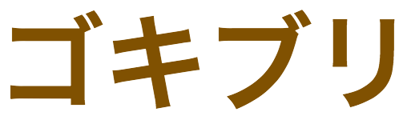

<!DOCTYPE html>
<!-- <h>タグがあったらそれを<section>で囲んだらほうがいいです。 -->
<html lang="ja">
<head>
  <meta charset="UTF-8">
  <title>PIKAKIN</title>
  <link rel="stylesheet" href="./css/reset.css" type="text/css">
	<link rel="stylesheet" href="./css/style.css" type="text/css">
  <!-- 思いつつ -->
  <!-- <body> 닫기 전에 스크립트를 선언해야 한다.HTML을 읽는 도중에
    javascript에서 에러가 나는 등 느려지는 등의 문제가 있어서
    body가 끝나기 직전에 선언 한다.-->
</head>
<!-- 基本の背景の色を指定しておくと、ページの一番上を過ぎてscrollupすると、
基本のいろが出るので、いいです。指定しないと、白の背景が出ちゃいます。 -->
<body>
  <article class="pg-profile">
      <section class="pg-profile-intro">
        <figure class="pg-profile-intro-picture">
          
        </figure>
        <h1 class="pg-profile-intro-name">
          JEONG HONGSEOK
        </h1>
        <p class="pg-profile-intro-motto">
          避けられないなら楽しめ
        </p>
        <button class="pg-profile-intro-btn">
          <!-- javascriptを使うものだったらクラス名には「jsc-!@#$」
          このように書きます。そして、javascriptを使うidは「jsi-!@#@!$」
          を使います。そして、pgとjsクラス名は事業部によって順番が
          ありますので、注意してください。-->
          <input id="button_down" type="image" src="img/button1.png"/>
          <!-- <a>を使ったほうがいいです。 -->
        </button>
      </section>
      <section class="pg-profile-whoami">
        <div class="pg-profile-whoami-introduce">
          <p class="pg-profile-whoami-introduce-text">
            始めまして。
            ジョン・ホンソクと申します。
            23際で、1991年10月8日に生まれました。
            故郷は韓国で、プサンという地域で生まれ、
            隣のヤンさんという地域でずっと住んでいます。
          </p>
          <p class="pg-profile-whoami-introduce-text">
            軍隊は2010年7月25日、18祭で5師団入隊にて、645日勤務しました。
            ちなみに5師団は鍵部隊とも呼ばれます。
            好きな食べ物はサクサクとした食感のチキンが好きです。
            韓国に変えたら毎日食べようかなと思っています。

          </p>
        </div>
        <!-- 認めはそうですが、見出しが新しく出ましたよね。
        セクションは一つのコンテンツだと考えてください。-->
        <!-- title은 같인 형태의 title이라면 하나의 공통된 class명을 사용하고,
        그 중에 따로 스타일을 적용해야할 title이 있다면, -->
          <h2 class="pg-profile-whoami-enlightenment">
            学んだこと・気づき
          </h2>
          <ul class="pg-profile-whoami-textbox cf">
            <li>
              <h3>HTML5の書き方</h3>
              <p>
              そのその「div」を使って全部表現しましたが、目的に合わせてタグをつける方法を学びました。

              </p>
            </li>
            <li>
              <h3>CSSの書き方</h3>
              <p>
                クラス名を利用してスタイルを与えることとか、「>」とか「+」などの書き方を学んで嬉しいです。

              </p>
            </li>
            <li>
              <h3>ルールを守る</h3>
              <p>
                チーム開発で最も重要なようは一貫性で、結果は同じだけど、作る方法は山ほど多いです。
                そこでちゃんとルールを気をつけながら作るのが大事だというのを感じました。
              </p>
            </li>
          </ul>
        </div>
      </section>
      <section class="pg-profile-skill">
        <h2 class="pg-profile-skill-title">
          SKILL
        </h2>
        <!-- 피규어는 메인의 요소를 참조해주는 것이다. 그래서 메인 컨텐츠인 스킬로고에는
        하지 -->
        <!-- 이미지태그에 꼭 alt 사용해야 한다. -->
        <ul class="pg-profile-skill-logo">
          <li>
            <figure>
              
              <figcaption>
                <p class="pg-profile-skill-logo-title">HTML5</p>
                <p class="pg-profile-skill-logo-explain">WebPageを作る</p>
              </figcaption>
            </figure>
          </li>
          <li>
            <figure>
              
              <figcaption>
                <p class="pg-profile-skill-logo-title">CSS3</p>
                <p class="pg-profile-skill-logo-explain">デザイン</p>
              </figcaption>
            </figure>
          </li>
          <li>
            <figure>
              
              <figcaption>
                <p class="pg-profile-skill-logo-title">JavaScript</p>
                <p class="pg-profile-skill-logo-explain">動的につくれる</p>
              </figcaption>
            </figure>
          </li>
          <li>
            <figure>
              
              <figcaption>
                <p class="pg-profile-skill-logo-title">Java</p>
                <p class="pg-profile-skill-logo-explain">オブジェクト志向</p>
              </figcaption>
            </figure>
          </li>
          <li>
            <figure>
              
              <figcaption>
                <p class="pg-profile-skill-logo-title">mysql</p>
                <p class="pg-profile-skill-logo-explain">Database</p>
              </figcaption>
            </figure>
          </li>
          <li>
            <figure>
              
              <figcaption>
                <p class="pg-profile-skill-logo-title">Android</p>
                <p class="pg-profile-skill-logo-explain">mobile</p>
              </figcaption>
            </figure>
          </li>
        </ul>
        <button class="pg-profile-skill-btn">
          <input id="button_top" type="image" src="img/button2.png"/>
          <!--  -->
        </button>
      </section>
      <section class="pg-profile-interest">
        <h2 class="pg-profile-interest-title">
          PHOTOGRAYPHY
        </h2>
        <p  class="pg-profile-interest-explain">
          <!-- 개행은 문장상으로 꼭 필요 할 때만 사용 할 것!
          미타메를 바꾸고 싶으면 CSS로 해야 한다.
          문장마다 <span class="br">를 달아서
          display: block; 을쓰면 그 태그의 너비에서 개행이 되버린다.
          -->
          自分が興味があるものです。<br>
          最近興味ができたものもありますし、<br>
          元々興味があったものもあります。<br>
          では、どんなものがあるか見ていましょうか？<br>
        </p>
        <ul class="pg-profile-interest-image">
          <li>
            
          </li>
          <li>
            
          </li>
          <li>
            
          </li>
          <li>
            
          </li>
          <li>
            
          </li>
          <li>
            
          </li>
        </ul>

        <button class="pg-profile-interest-btn">
          <input id="button_top" type="image" src="img/button3.png"/>
          <!--  -->
        </button>
      </section>
  </article>
  <footer class="pg-profile-footer">
    <ul class="pg-profile-footer-linkedsns">
      <li>
        <a href="https://twitter.com/"></a>
      </li>
      <li>
        <a href="https://dribbble.com/">
      </li>
      <li>
        <a href="https://behance.net/">
      </li>
      <li>
        <a href="https://instagram.com/">
      </li>
    </ul>
    <!-- Copyrightは<small>タグを使いましょう。. -->
    <p class="pg-profile-footer-copyright">
      Copyright © 2015 All Rights Reserved.<br><br>
       Made PIKAKIN
    </p>
  </footer>
  <script type="text/javascript" src="http://code.jquery.com/jquery-2.1.0.min.js" ></script>
  <script type="text/javascript" src="js/snowfall.min.jquery.js"></script>
  <script type='text/javascript'>
    $(document).ready(function(){
    $(document).snowfall({
                shadow : true,
                round : true,
                minSize: 5,
                maxSize:8
                })
    });
  </script>
  <script type="text/javascript">
    $(document).ready(function(){
      $('#button_top').click(function(){
        $('html,body').animate({scrollTop:0},'slow');
      });
      $('#button_down').click(function(){
        $('html,body').animate({scrollTop:700},'slow');
      })
    });
  </script>
</body>
</html>
